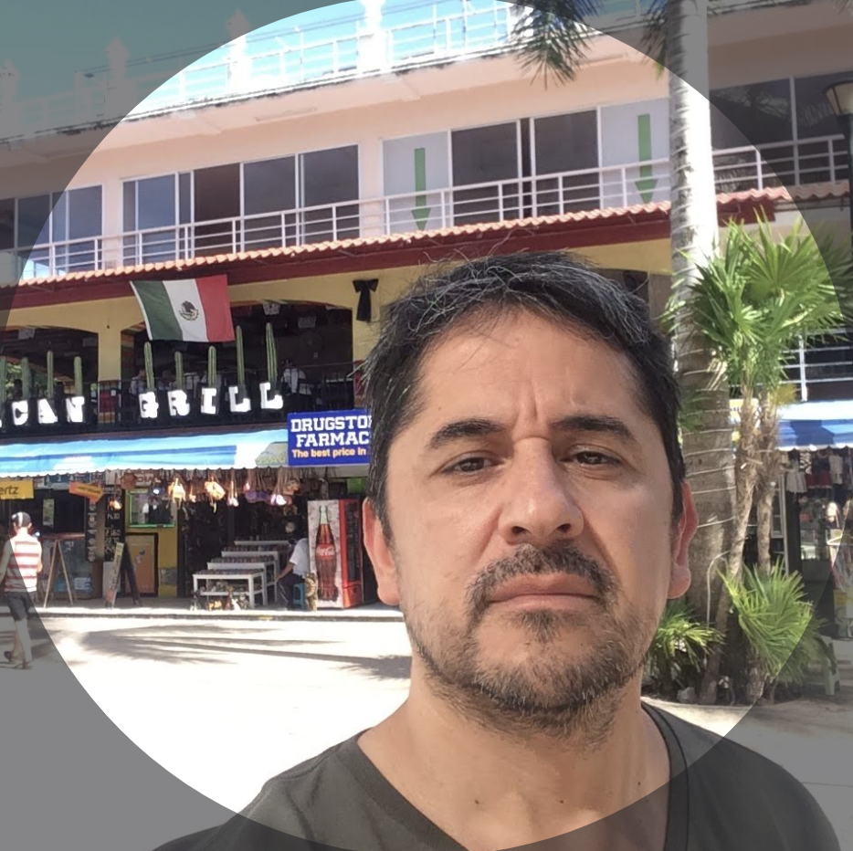

Curriculum Vitae

Nombre:
Marcelo Daniel Saravia
Edad:
52 años
Nacionalidad:
Argentina
Correo:
Sobre mi:
"Luego de 29 años de trabajo en una de las empresas más importantes de Argentina, tomé la decisión de retirarme para dedicarme a este apasionante
mundo que es la programación y diseños web. Siempre tuve la intriga de que habia detrás de la pantalla; de esa página que por tanto
tiempo usé en mi trabajo con distintas aplicaciones,... como se comunicaban, como interactuaban, como te devuelven datos e información. Y decidí aprender,...
a dedicar este nuevo tiempo en algo que siempre me apasionó. Hoy es el
momento de hacer lo que me gusta, y porque no, también vivir de ello. Estoy listo, estoy dispuesto, ya encontré la senda y no hay vuelta atrás."
_________________________________________________________________________________________________________________________________________________________________________________________
Educación
Nivel Secundario -Perito Contador - Colegio Domingo F. Sarmiento
Curso Microsoft Office: Word - Excel - Powerpoint completado - Instituto Privado Col.Caroya
Inglés nivel básico completo e intermedio en curso - Clases Profesor Particular
_________________________________________________________________________________________________________________________________________________________________________________________
_________________________________________________________________________________________________________________________________________________________________________________________
Habilidades
Soy un apasionado por las diferentes tecnologías que se suman día a día a este mundo. Me apasiona todo lo nuevo que emerje, que aporte una mejor calidad
de vida en las personas en general.
Soy una persona proactiva, emprendedora, colaborativa, buen compañero de trabajo, con capacidad para el manejo de personal e
interrelacion con equipos de diferentes áreas. En todos mis años de trabajo he sido calificado por mis superiores como un excelente empleado, no solo por mis
habilidades, sino también por mi comportamiento, adaptación, integración y respeto por las autoridades superiores, de mis pares y demás compañeros, actuando bajo los standares reglamentarios y actuando siempre en beneficio de la empresa, sirviendo con excelencia.
_________________________________________________________________________________________________________________________________________________________________________________________
Hobbies
No tengo ni practico ningún hobbie en particular.
Primeramente soy una persona familiera, compruebo que la familia es lo primero en la vida. Disfruto a pleno de mis hijos y mis nietos, que son los que motivan
mi andar diario.
En lo personal, me encanta la vida al aire libre, amo la naturaleza, viajo todo lo que puedo y disfruto cada momento, ya sea montaña, rios, mar, playas. Disfruto tanto
de un hotel con todas las comodidades como también una carpa. Abrir una ventana o bajar el cierre de una carpa en el amanecer, con mi equipo de mate y una montaña o
lago al frente es mi mejor vida. Práctico futbol y paddle siempre que puedo, con familiares y amigos (asadito por medio jeje). Esto soy yo,
vivir la vida al máximo.